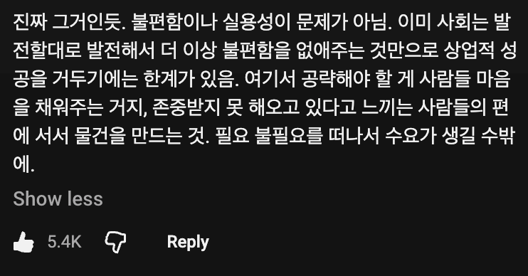

그러게
카피 존나 쉽고 보호 못받을 아이디어 같은데
투자를 적극적으로 하네
나도 보면서 밴드에 색만 넣는게 지적재산권이 인정되려나? 라는 생각부터 들던데
저기보면 그런거 많이 나오는데 돈 버는거 보니까 미국은 좀 다른거 아닐까 싶네
그래서 투자 비용이 얼마 안되는거지. 미국사람들은 워낙 돈을 많이 쓰니까 저 얼마 안되는 순간에도 순익을 뽑아낼 수 있어서. 근데 내가 생각하기에는 저거 재고가 엄청 필요할텐데 단가가 그만큼 싼가?
투명반창고 쓰면 되잖아 ㅠㅠ
의외로 대체재가 있지 않나 싶은 것이 돈이 되기도 함.

그럼 속 밴디지 색깔은?
그... 가운데 허연 부분은 안되잖아..
투명한게 많아서.. 굳이 심지어 여드름 패치도 투명하잖아
아이디어는 좋은데 ㄹㅇ 너무 카피가 쉽잖여
어차피 비슷한건 시장에 많아서 돈은 마케팅 파워로 버는건데 저 투자자들한테는 마케팅과 유통을 해줄수있는 네트워크가 있으니까.
이미 잘 팔리는데 왜 투자를 더 받음? 더 많이 팔려고? 욕심 아닌가... 저건 경쟁 업체가 바로 치고 들어올 수 있는데
어차피 베끼기 쉬운거라 경쟁업체는 들어옴
방송타서 오리지널리티는 가져가면서 지분 좀 떼어주고 마케팅 네트워크 유통네트워크 올라타는거임
이건 금융이 아니라 세일즈라…금융쪽면 니말대로 투자 안받고 자기자본으로 가는 게 낫겠지만 제조 유통 판매는 다름
엑시트
델러슼ㅋㅋㅋㅋㅋ
애초에 그 방수용 투명한 반창고 쓰면 되지 않나.. 그건 거즈 부분이 하얀색이라 불편한가 ㅋㅋㅋ
내 피부색 rgb도 파악해놔야 하나 이거
저게 특허 등록은 되나?? 기존 밴드에 색칠만 했다고???
특허는 어려우니 저런데 나가서 선점효과 노리는거지 뭐
방수까지 가능한 투명반창고있잖아 요즘은 액체로된것도 있더만
저기 써있잖아
불편함을 없애주는 차원이 아니라
(내 피부색이) 존중받고 있음을 느끼게 하는것
투명한 거 쓰면 됨
투명한것도 안에 붕대질감부분은 티나지
뽀로로 반창고 쓰면 안됨?
근데 댓글에 투명한거랑 저런거랑 재질이 다르지 않나?
근데 미국은 저런거 보호가 잘돼서 어지간하면 대기업이 저 스타트업 사서 사업 이어나가는쪽으로 가는거같더라? 물론 애플같은 경우도 있긴한데
생수가 있는데도 물을 브랜딩하면 몇배가격에 팔리는시대임(리퀴드데스)
보지색깔에 맞게 고를수있겠군
중요한건 갬성이다
티나도 전혀문제없는데
응 아쿠아밴드 ㅅㄱ
22
아니 근데 일단 유명해지면 알리에서 천원에 10장정도 찍어낼건데 어떻게 그 큰돈을 투자할수있는걸까